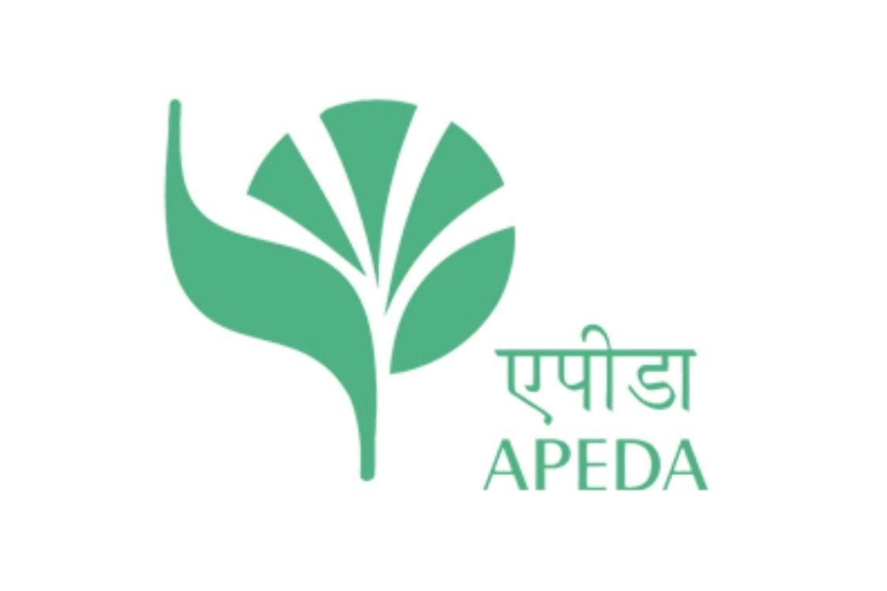
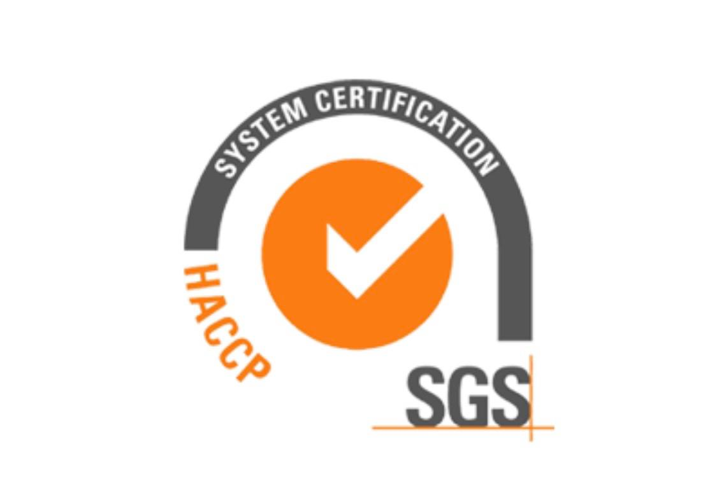
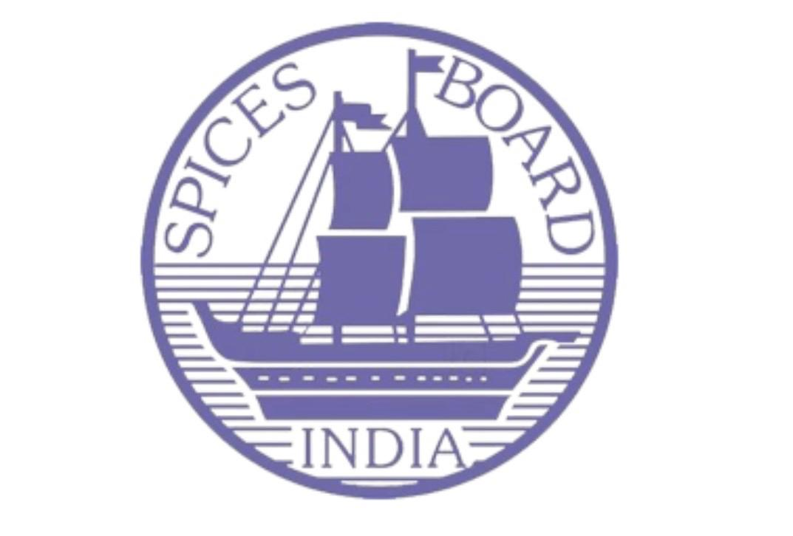
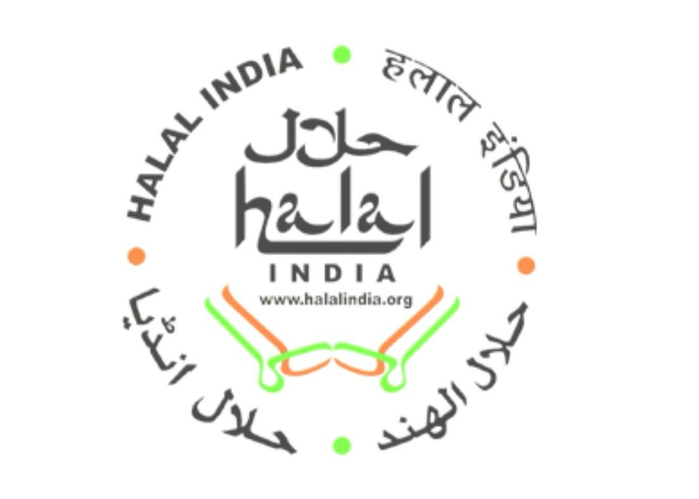
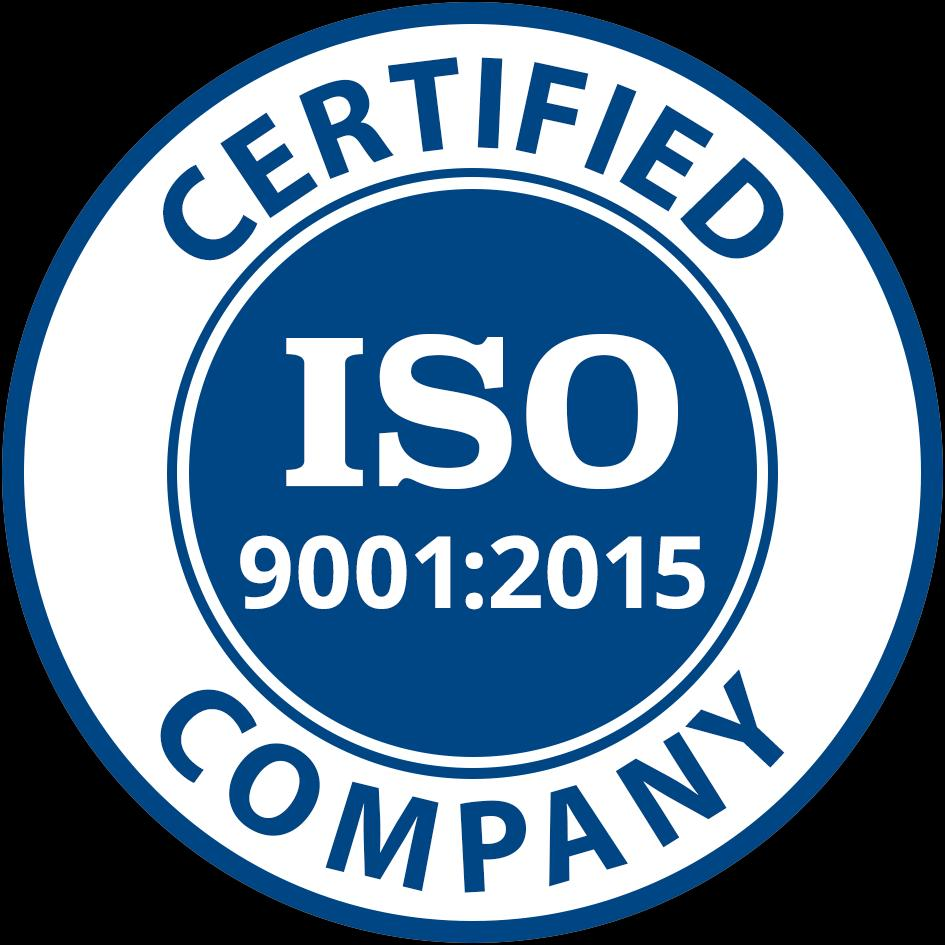
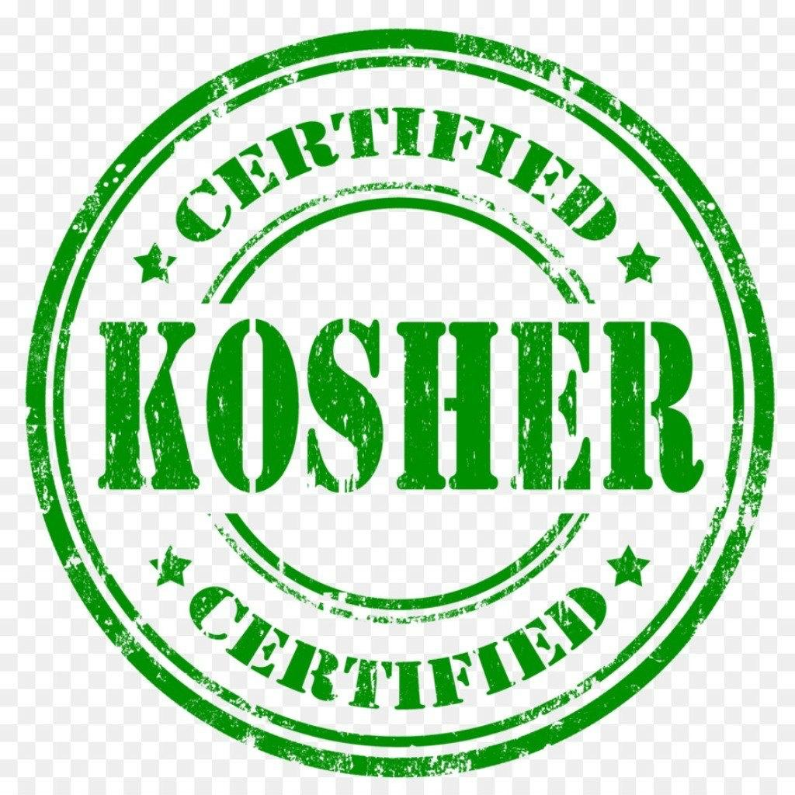

Process control
Time, temperature, moisture, sanitation, and cut size are checked at the stages where they matter.
Quality assurance
A visible control path connects raw-material intake, controlled dehydration, precision sorting, contaminant detection, and export packing.
Quality architecture
Time, temperature, moisture, sanitation, and cut size are checked at the stages where they matter.
Optical sorting, detector challenges, and manual inspection create successive quality gates.
Batch identity, inspection records, packing checks, and shipment documents stay connected to the order.
Interactive process map
Select any stage to see the operating focus, control checks, and expected release point.
Source
Fresh onions and other produce are received from approved supply partners and assigned to an identifiable lot.
Document support
Certification & registration
Registration and certification documents can be shared against the applicable product, facility, and shipment scope.






Demo compliance display: verify the certificate holder, product scope, registration number, and current validity before production publication.
Share your specification sheet or approved sample. We'll map the feasible product format, process controls, testing route, and inspection plan.
Discuss your requirement ↗